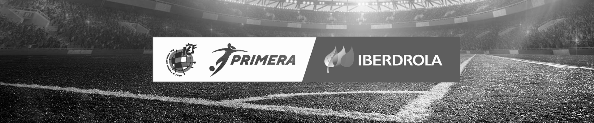
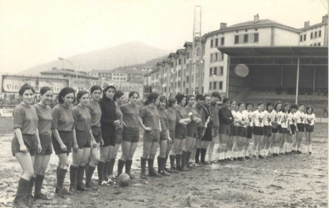
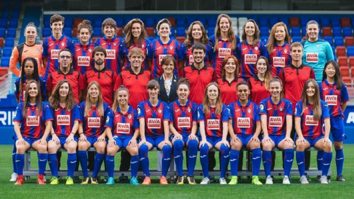

<!DOCTYPE html>
<html lang="es"></html>
<head>
    <meta charset="UTF-8">
    <meta name="viewport" content="width=device-width, initial-scale 1.0">
    <meta name="author" content="Aina Muñoz Fernández">
    <meta name="generator" content="Visual Studio Code">
    <meta name="description" content="Clasificatoria de la Liga Iberdrola">
    <meta name="keywords" content="fútbol femenino eibar liga iberdrola información">

    <title>Información General - SD Eibar Femenino</title>

    <link rel="stylesheet" type="text/css" href="../css/common.css">
    <link rel="stylesheet" type="text/css" href="../css/infogeneral.css">

</head>

<body>
    
    <div class="div-header">
        <header>       
            <!--imagen liga iberdrola-->
            
        
        </header>
    
        <div class="header-equipo">
        
            <a href="../index.html" class="return-home"><h1>SD Eibar Femenino </h1></a>   
            <!--Menú de navegación de classificacion / resultados /galeria-->
        
            <ul class="ul-navbar">
            
                <li><a href="../web/classif.html">Clasificación</a></li>
                <li><a href="../web/resultats.html">Resultados</a></li>
                <li><a href="../web/galeria.html">Galeria</a></li> 
                <li><a href="../web/enquesta.html">Encuesta</a></li> 
            
            </ul>
    
        
        </div>
    
    </div>

    <main>

        <div class="div-content">
            
            <!--Info del club + fotos asociadas-->
            <div id="historia-eibar">

                <div id="antecedentes">
                    <h2>Un largo camino</h2>
                    <div class="historia text">
                        
                        <p>Los antecedentes del fútbol femenino en Éibar se sitúan en el año 1971, en el que un equipo 
                        formado exclusivamente por mujeres jugó un partido amistoso en Ipurúa para recaudar dinero a 
                        favor de las ikastolas clandestinas. El régimen de Franco prohibió la disputa de dicho partido, 
                        aduciendo que "el fútbol no es apropiado para señoritas". Las eibarresas, desafiando la 
                        prohibición, jugaron y ganaron el partido.</p>

                    </div>

                    <div class="historia imagen">
                        
                    </div>

                </div>

                <div id="actualidad">
                    <div class="historia text">
                        <p>En la actualidad, el Primer Equipo Femenino milita en el Grupo Norte de la Segunda División Pro, tras su ascenso 
                        desde la Segunda División (Grupo II) en la Temporada 2018-19, y es heredero de una larga 
                        tradición de fútbol femenino en Eibar, habiendo disputado la Superliga Femenina 
                        (Primera División) en las temporadas 2009-10 y 2010-11.</p>
                    </div>

                    <div class="historia imagen">
                        
                    </div>
                </div>

            </div>
            <div id="palmares">
                <h2>Palmarés</h2>
                    <ul id="ul-palmares">
                        <li>Campeón de la Supercopa de España, 1999-00</li> 
                        <li>Subcampeón de la Liga de Campeones, 2000-01</li> 
                        <li>Subcampeón de la Copa de la Reina, 1998-99</li>
                        <li>Campeón de la Liga Nacional (Grupo Norte),1998-99 y 2000-01</li>
                        <li>Subcampeón de la Liga Nacional (Grupo Norte) 1997-98 y 1999-00</li>
                    </ul>
            
            </div>

        </div>
        
    </main>

</body>

<footer>
    <!--aquí va tema copyright + info contacto + redes sociales-->
    
    <!--esta lista tendrá que ir inline-->
    <ul class="contact"> 
        <li><p class="contact-text">&copy; SD Eibar FC Femenino</p></li>
        <li><address><p class="contact-text">Ipurua Kalea 2, 20600 Eibar (Gipuzkoa)</p></address></li>
        <li><p class="contact-text">Telf. 943 201 831</p></li>
        <li><p class="contact-text">Fax. 943 202 606</p></li>
        <li><a href="https://www.instagram.com/sdeibar/?hl=es" target="_blank">
            
        </a></li>
        <li><a href="https://www.facebook.com/sdeibar/" target="_blank">
            
        </a></li>
        <li><a href="https://twitter.com/SDEibar" target="_blank">
            
        </a></li>
        <li><a href="https://www.youtube.com/channel/UClHd-P6Bfkm1dlUkMdkTemg" target="_blank">
            
        </a> </li>
      </ul> 
    
     
</footer>